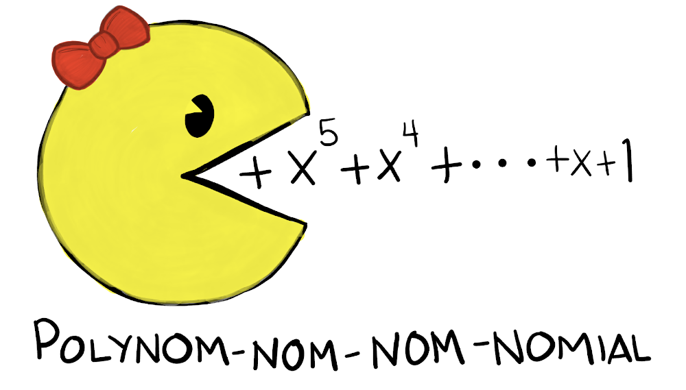
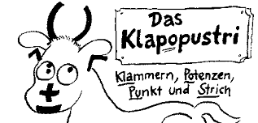
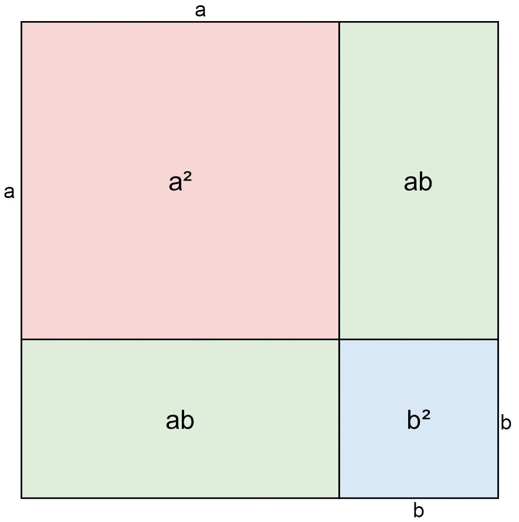
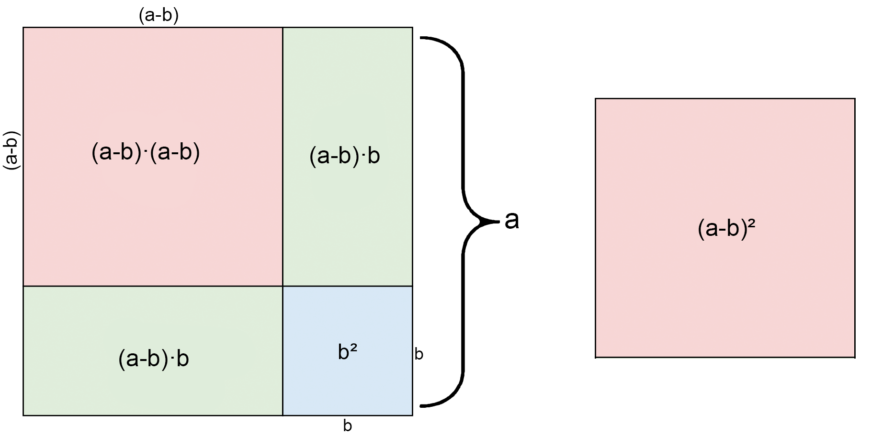
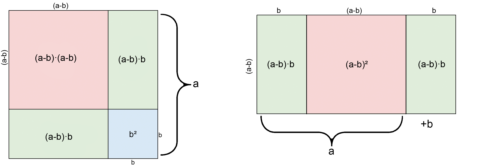

| \(n\) | \((a + b)^n\) | \((a - b)^n\) |
|---|---|---|
| \(0\) | \(1\) | \(1\) |
| \(1\) | \(a + b\) | \(a - b\) |
| \(2\) | \(a^2 + 2ab + b^2\) | \(a^2 - 2ab + b^2\) |
| \(3\) | … | … |
| \(4\) | … | … |
| \(5\) | … | … |
| … | … | … |
1 Polynome

1.1 Lernziele
1.2 Repetition Terme und Variabeln
Wir erinnern uns an folgende Definitionen
- Zwischen zwei Variabeln oder einer Zahl und einer Variabeln darf man den Multiplikationspunkt weg lassen (\(2\cdot a\) ist dasselbe wie \(2a\))
- Stehen mehrere Variabeln in einem Produkt, so werden diese alphabetisch geordnet.
- Steht zusätzlich eine Zahl im Produkt (diese Zahl nennt man Koeffizient), steht diese an erster Stelle.
- Beträgt der Koeffizient \(1\) oder \(-1\), wird er nicht geschrieben
Beispiele:
- Ein einfacher Term ist die Abfolge \(1+4\). Wir können nun statt Zahlen auch Variablen verwenden, z.B. \(a+ b\).
- Kompliziertere Terme können neben Zahlen oder Variablen und einem Operationszeichen auch mehrere Operationszeichen und Klammern enthalten: \(3\cdot (a−b) + 15 : 3−c\)
- \(5x= 7\) und \(4ac)−5ac(+d3\) sind keine Terme
1.2.1 Terme umformen und vereinfachen
Zwei Terme \(T_1\) und \(T_2\) heissen äquivalent, wenn alle möglichen Einsetzungen für die Variabeln bei \(T_1\) und \(T_2\) den selben Wert ergeben, so dass gilt: \(T_1 = T_2\)
Einen Term umformen bedeutet, man ersetzt ihn durch einen äquivalenten Term.
Regeln:
Gleiche Variabeln dürfen zusammengefasst werden \[ 3v + 7v = (3+7)v = 10v \]
Verschiedene Variabeln oder Variabeln und Zahlen dürfen NIE zusammengefasst werden \[ 5x + 2y -3x + 6y = 2x + 8y \]
\[ 2-4x-9+8x = 4x-7 \]
Multiplikationen mit gleicher Variable als Faktor können zu einer Potenz zusammengefasst werden \[ a\cdot a\cdot b\cdot a\cdot b\cdot a = a^4 b^2 \]
Verschiedene Potenzen der selben Variable dürfen NIE zusammengefasst werden \[ 3x^2 + 5x^4 - 2x^2 + x^4 = x^2 + 9x^4 \]
1.2.2 Hierarchie der Operationen
Die Hierarchie der mathematischen Operationen ist vorgegeben:
Klammer vor Potenz vor Punktoperationen vor Strichoperationen
Merkhilfe: KlaPoPuStri

Beispiel
Werte den folgendnen Term aus
\[ a(b+cd^e) \] für \(a=6, b=5, c=4, d=3, e=2\)
Bemerkung
\[ -x^2\neq (-x)^2 \]
- mit \(-x^2\) wird nur die Variable \(x\) quadriert
- mit \((-x)^2\) wird die Variable und das negative Vorzeichen quadriert
1.2.3 Summe oder Produkt
Bevor wir eine spezielle Gruppe von Termen betrachten, - die Polynome - müssen wir aber den Unterschied zwischen einer Summe und einem Produkt etwas genauer anschauen. Die zuletzt ausgeführte Operation entscheided, um welchen Term es sich handelt.
Beispiele für Summen
- \(x+y\)
- \(5a + b\)
- \(3b^2 - 2ab\)
Beispiele für Produkte
- \(xy\)
- \(5(a+b)\)
- \((b^2-a):2\)
Bemerkung
Dir ist vieleicht aufgefallen, dass \(3b^2 - 2ab\) als “Summe” aufgelistet wurde, obwohl es sich um eine Differenz handelt?
Man kann jede Differenz als eine Summe mit negativen Vorzeichen betrachten. So wird die negative Gegenzahl addiert, statt der positiven Subtrahiert:
\(5-3\) ist dasselbe wie \(5+ (-3)\)
Ebenfalls wurde \((b^2-a):2\) als “Produkt” eingeordnet, statt als “Quotient”. Eine Division mit einer Zahl ist dasselbe wie eine Multiplikation mit dem Kehrwert der selben Zahl:
\(4:2\) ist dasselbe wie \(4 \cdot \frac{1}{2}\)
Beispiele für Summen
Werte den folgendnen Term aus
\[ a(b+cd^e) \] für \(a=6, b=5, c=4, d=3, e=2\)
Aufgaben lösen
Lösen die Aufgaben zum Thema Terme und Variabeln 2.1
1.3 Polynome
1.3.1 Monome
Schauen wir uns folgende Beisiele an:
Beispiele für Monome
- \(ab\)
- \(5a^2\)
- \(-3x^5z^2\)
Keine Beispiele für Monome
- \(a-b\)
- \(2\sqrt{a}\)
- \(-\frac{2x}{5yz}\)
Beispiele:
- \(2a\): Der Koeffizient ist die Zahl \(2\)
- \(-7b^2d\): Der Koeffizient ist die Zahl \(-7\)
- \(\frac{3}{5} xyz\): Der Koeffizient ist die Zahl \(\frac{3}{5}\)
Beispiele für gleiche Monome
- \(2xyx\) und \(2x^2y\)
- \(-7abc^2\) und \(-7ac^2b\)
- \(\frac{3}{4}mnp\) und \(\frac{3}{4}pnm\)
Beispiele für gleichartige Monome
- \(5\) und \(-3\)
- \(-5acx\) und \(\frac{1}{2}xac\)
- \(n(-3)azn\) und \(-3an^2 z\)
Beispiele für nicht gleichartige Monome
- \(x\) und \(y\)
- \(3abcd\) und \(-\frac{1}{5}abc\)
- \(a^2b\) und \(ab^2\)
- \(5cdcc\) und \(5c^2d^2\)
1.3.2 Einführung Polynome
Der Begriff Polynom stammt aus den zusammengesetzten griechischen Worten poly (viel) und nomos (Gesetz, Regel). Auch wird es übersetzt als vielteilig, vielnamig. Wo ein Monom (Mono bedeutet übersetzt: allein, einzig) für etwas einmaliges steht, steht ein Polynom für vielteiliges.
Mono vs. Poly
Die Begriffe Mono und Poly kommen in der Mathematik, aber auch in anderen Disziplinen häufig vor, es lohnt sich die Begriffe auseinanderhalten zu können. Dazu ein kleines Beispiel:
Bestimmt hast du aus der Biologie die Begriffe Monogamie und Polygamie gehört.
In der Monogamie befinden sich Lebewesen in einer Beziehung wo es nur einen einzigen Partner gibt (Bsp. Albatrosse).
In der Polygamie haben entweder Männchen, oder Webichen oder beide mehrere Partner (Bsp. Trauerschnäpper).
Addiert man Monome, ist das Resultat meist kein Monom mehr. Diesen, durch addieren von Monomen neu entstandenen Monomen nennen wir Polynom.
Somit ist jedes Monom auch ein Polynom. Aber nicht jedes Polynom ist ein Monom!
Die Vorsilbe poly, welche schlicht viel bedeutet, können wir auch etwas genauer beschreiben:
- mono \(\rightarrow\) einzeln (1) \(\rightarrow\) Monom
- bi \(\rightarrow\) zweifach (2) \(\rightarrow\) Binom
- tri \(\rightarrow\) dreifach (3) \(\rightarrow\) Trinom
Beispiele
- \(15ab^2cdx^5yz^3\): Monom, der Term besteht aus einem einzigen Produkt.
- \(x-y\): Binom, der Term besteht aus einer Summe von zwei Monomen.
- \(3x^2 + 3x -5\): Trinom, der Term besteht aus einer Summe von drei Monomen
Aber achtung! Es ist nicht immer sofort klar, ob es sich um welchen typ es sich handelt. Erst, wenn der Term maximal vereinfacht wurde, kann eine Aussage getroffen werden.
Beispiel Benennung Monom, Binom, Trinom..
Um welchen Polynomtyp handelt es sich bei untenstehendem Term?
\[ 3(-b+(-2c)) \]
1.3.3 Grad eines Polynoms
Wie wir gesehen haben, kann man Polynome anhand der Anzahl Produkte unterscheiden. Eine weitere Möglichkeit der Unterscheidung von Polynomen ist ihr Grad.
Achtung: Auch der Exponent \(1\) muss beachtet werden, auch wenn dieser üblicherweise nicht ausgeschrieben wird: \(a=a^1 \leftarrow\) Grad: \(1\)
Beispiel: Grad des Polynoms bestimmen
Bestimme den Grad des folgenden Polynoms
\[ 13x^2y - (xy)^2 + 10xy^2 + 2^{10}y \]
Tip: Bestimme zuerst den jeweiligen Grad der Monome
1.4 Grundoperationen mit Polynomen
Polynome werden dich in der Mathematik noch eine ganze Weile begleiten. Nicht, weil wir zwischen Monomen und Polynomen oder deren Grad unterscheiden möchten, sondern weil wir später z.B. in der Phsyik fast alles mit Gleichungen, respektive Funktionen beschreiben (und natürlich berechnen). Zu diesen Themen kommen wir aber später noch. Wir benötigen erst noch etwas Übung und mehr Vorwissen, bevor wir uns in diesen Teil der Mathematik begeben.
Wie rechnet man nun mit Polynomen?
Einige Operationen kennen wir bereits von den Termen.
1.4.1 Addition und Subtraktion
Addieren wir zwei oder mehr Polynome (oder subtrahieren sie voneinander), erhalten wir i.d.R. ein längeres Polynom, welches möglicherweise vereinfacht werden kann.
Wir vereinfachen, indem wir die Koeffizienten von gleichartigen Monomen addieren.
Beispiel: Addition und Subtraktion bei Polynomen
Summe zweier Monome: \(3x\) und \(2yz\) \[ (3x) + (2yz) = \]
Summe zweier Binomen: \(5bc^2 + a\) und \(ab-7cbc\) \[ (5bc^2 + a) + (ab-7cbc) = \]
Differenz zweier Binome: \(3ab+x^2\) und \(5xy+x^2\) \[ (3ab+x^2) - (5xy+x^2) = \]
1.4.2 Multiplikation
Bei der Multiplikation gibt es einige Fälle einzeln zu betrachten.
1.4.2.1 Produkt aus zweier Monome
Zwei Monome können wir so multiplizieren, wie wir das bereits von der Multiplikation zweier Variabeln gelernt haben.
Beispiel: Multiplikation zweier Monome
Wir multiplizieren zwei Monome: \(P=2b\) und \(Q=-5a^3b^2\): \[ P\cdot Q = (2b)\cdot (-5a^3b^2)= \]
Achtung: beachte das negative Vorzeichen bei Q
1.4.2.2 Produkt aus einem Monom und einem Bi- oder Trinom
Etwas anders sieht es aus, wenn wir Monome, Binome, Trinome etc. miteinander Multiplizieren möchten. Hier benötigen wir das Distributivgesetz mit Monomen anstelle von Variabeln.
Beispiel: Monom mit Binom multiplizieren
\[ (3x^2)\cdot (4xy-z^3) = \]
Beispiel: Monom mit Trinom multiplizieren
\[ (-5a)\cdot (3u^2 - 2uw + v^2w) = \]
Beispiel: Produkt zweier Binome
Betrachten wir fürs verständnis folgendes Beispiel geometrisch: Wir multuplizieren \(P=a+b\) mit \(Q=c+d\)
\[ P\cdot Q = (a+b) \cdot (c+d) = \]
Weitere Beispiele
Berechne jeweils \(P\cdot Q\)
- \(P = x^2-x\), \(Q = x+1\)
- \(P = -3a+bc\), \(Q = b^2c + 5ab\)
- \(P = -7 + g^2\), \(Q = fh - 2\)
1.4.2.3 Produkt von Polynomen
Die gefundene Methode für die Multiplikation von Binomen funktioniert auch für Polynome mit beliebiger Anzahl von Monomen.
Merke
Das Produkt zweier Polynome berechnet man, indem man jedes Monom des ersten Polynoms mit jedem Monom des zweiten Polynoms multipliziert. Anschliessend werden alle erhaltene Produkte addiert.
‘Jedes mit jedem - dann alles addieren’
Beispiele: Multiplikation von Polynomen
Berechne jeweils die folgenden Produkte. Stelle das Resultat möglichst einfach dar:
- \((3a-b^2) \cdot (-5ab + 3b^2 -2a^2) =\)
- \((-3xy) \cdot (2x + 4y) =\)
- \((x-y) \cdot (x^2 - 5x + 1) =\)
- \((a-3) \cdot (a+2) =\)
- \((a) \cdot (a^2) \cdot (a-1) =\)
- \((xy) \cdot (x+y) \cdot (x-y) =\)
- \((c+1) \cdot (c+2) \cdot (c+3) =\)
1.4.3 Division
Werden zwei beliebige Polynome dividiert, kommt es oft vor, dass das Resultat kein Polynom ist, sondern ein Bruch mit jeweils einem Polynom im Zähler und Nenner.
Wir betrachten aber vorerst nur Divisionen, bei welchen wir ein Polynom als Ergebnis erhalten.
1.4.3.1 Division durch eine Zahl
Steht im Divisor eine Zahl und im Dividenden ein Polynom, so dividiert man den Koeffizienten jedes Monoms des Polynoms durch diese Zahl.
Beispiel: Trinom dividiert durch Zahl
\[ (3x^2 - 6xy + 9y^2) : 9 = \]
Als Koeffizienten dürfen Brüche verwendet werden. Im Nenner darf keine Variable vorkommen.
1.4.3.2 Division durch Monom
Steht im Divisor ein Monom und im Dividenden ein Polynom, so dividiert man jedes Monom des Polynoms durch das Monom im Divisor.
Beispiel: Trinom dividiert durch Monom
\[ (5x^2y - xy + 4xy^2) : (-xy) = \]
Wir sehen, die divsion funktioniert nur, wenn alle Monome des Polynoms die Variabeln des Divisors enthalten.
1.4.3.3 Binom dividiert durch Binom
Dividiert man zwei Binome, klammert man den Dividenden (und auch den Divisor) so aus, dass der Dividend den Divisor als Faktor enthält. Danach dürfen wir kürzen.
Was bedeutet das?
Schauen wir es uns in einem Beispiel an:
Wir haben die beiden Binome \(P=9x^2 - 3xy\) und \(Q=3x^3 - xy\) und dividieren diese:
\[ P:Q = (9x^2 - 3xy) : (3x^3 - xy) \]
- Schritt 1: ausklammern \[ P=9x^2 - 3xy = 3x(3x-y) \]
\[ Q=3x^3 - xy = x(3x^2 - y) \]
Schritt 2: Dividieren \[ (9x^2 - 3xy) : (3x^3 - xy) = \frac{3x(3x-y)}{x(3x^2 - y)} \]
Schritt 3: Kürzen
\[ \frac{3x(3x-y)}{x(3x^2 - y)} = \frac{3(3x-y)}{3x^2 - y} \]
Beispiel: Binom durch Binom
Dividiere jeweils \(P\) durch \(Q\) und vereinfache soweit als möglich.
- \(P=ab^2 - 3ab\), \(Q=2ab - 6a\)
- \(P=2c - 10\), \(Q=5-c\)
1.5 Potenzen von Polynomen
Wir haben bereits Produkte von Polynomen betrachtet. Mit sehr grossem Aufwand können wir so beliebig hohe Potenzen von Polynomen berechnen. Stell dir vor, du müsstest an einer Prüfung \((2x+y)^{10}\) mit der eben vorgestellten Methode berechnen. Phu, da würde bestimmt fast die gesamte Prüfungszeit nur für diese eine Aufgabe benötigt werden.
Natürlich gibt es aber elegantere Wege um Potenzen von Binomen schneller zu berechnen.
1.5.1 Die binomische Formeln
Die binomische Formeln betrachten wir am besten geometrisch und finden die entsprechenden Terme
1.5.1.1 Erste binomische Formel
Wir multiplizieren \((a+b)\) mit sich selbst. Also: \((a+b)^2\).
Graphisch stellen wir uns ein grosses Quadrat mit den Seitenlängen \(a+b\) vor. Die Fläche setzt sich aus 2 Quadraten mit den Seitenlängen \(a\), resp. \(b\) zusammen. Dazu kommen 2 rechtecke mit je den Seitenlängen \(a\) und \(b\).

Erste binomische Formel
Wie lautet die erste binomische Formel?
\[ (a+b)^2 = \]
1.5.1.2 Zweite binomische Formel
Wir multiplizieren \((a-b)\) mit sich selbst. Also: \((a-b)^2\)
Graphisch haben wir nun ein einziges Grosses Quadrat mit den Seitenlängen \(a\). In diesem Quadrat schreiben wir 2 Quadrate ein, mit den Seitenlängen \((a-b)\) und \(b\). Dadurch resultieren 2 weitere Rechtecke mit den Seitenlängen \((a-b)\) und \(b\).›

Zweite binomische Formel
Wie lautet die zweite binomische Formel?
\[ (a-b)^2 = \]
1.5.1.3 Dritte binomische Formel
Wir multiplizieren \((a+b)\) mit \((a-b)\). Also: \((a+b)\cdot(a-b)\)

Dritte binomische Formel
Wie lautet die dritte binomische Formel?
\[ (a+b)(a-b) = \]
1.5.1.4 Zusammenfassung
Wir haben folgende Formeln gefunden:
Video zu binomischen Formeln
Mir ist bewusst, dass das auf den ersten blick nicht ganz so einleuchtend ist. Hier hilft nur eins: üben, üben üben!
Und möglicherweise hilft auch eine andere Erklärung:
Schauen wir uns noch einige Beispiele für die binomische Formel an:
Beispiele: binomische Formeln
Vereinfache folgende Terme:
- \((a+1)^2\)
- \((d-5)(d+5)\)
- \((x-2)^2\)
- \((2u+3v)^2\)
1.5.2 Höhere Potenzen von Binomen
Nun haben wir Formeln gefunden, um 2er Potenzen von Binomen zu berechnen. Gibt es eine Regel, wie wir beliebig hohe Potenzen berechnen können? Finden wirs raus!
Aufgabe: Binome mit höheren Potenzen
Berechne jeweils die Potenzen. Schreibe auf Papier und fasse die Ergebnisse als Tabelle zusammen:
Aufgabe: Vergleiche Formeln
Vergleiche die Formeln für \((a + b)^n\) und \((a − b)^n\). Was fällt dir auf?
Aufgabe: Pascal’sches Dreieck
Ergänze die Darstellung unten mit den Koeffizienten der Terme \((a + b)^3\) und \((a + b)^4\).
Finde eine Regel, um die weiteren Reihen zu ergänzen.
| \(n\) | Koeffizienten von \((a + b)^n\) |
|---|---|
| 0 | 1 |
| 1 | 1 1 |
| 2 | 1 2 1 |
| 3 | |
| 4 | |
| 5 | |
| 6 |
Im Pascal’schen Dreieck (Aufgabe oben) lassen sich Potenzen von Binomen sehr effizient bestimmen.
Aufgabe: Potenzen von Binomen mit Pascal’schem Dreieck
- Schreibe den Term \((a+b)^5\) ohne Klammern
- Schreibe den Term \((a-b)^6\) ohne Klammern
- Schreibe den Term \((2u+5)^4\) ohne Klammern
Wir fassen die gefundene Regel für die berechnung von \((a+b)^n\) und \((a-b)^n\) wie folgt zusammen:
Am Beispiel von \((a+b)^5\) ist das: \[ (a+b)^5 = a^5+5a^4b + 10a^3b^2 + 10a^2b^3 + 5ab^4 + b^5 \]
oder für \((a-b)^5\): \[ (a - b)^5 = a^5 - 5a^4b + 10a^3b^2 - 10a^2b^3 + 5ab^4 - b^5 \]
Aufgabe: Berechnung vom Eingangsbeispiel
Eingangs des Kapitels erwähnte ich den folgenden Term \[ (2x+y)^{10} \]
Du dürftest jetzt alle Werkzeuge haben, um den Term ohne Klammern zu schreiben.
Tip: Du kannst auch zuerst die allgemeine Form für \((a+b)^{10}\) berechnen und anschliessend die Aufgabe lösen.